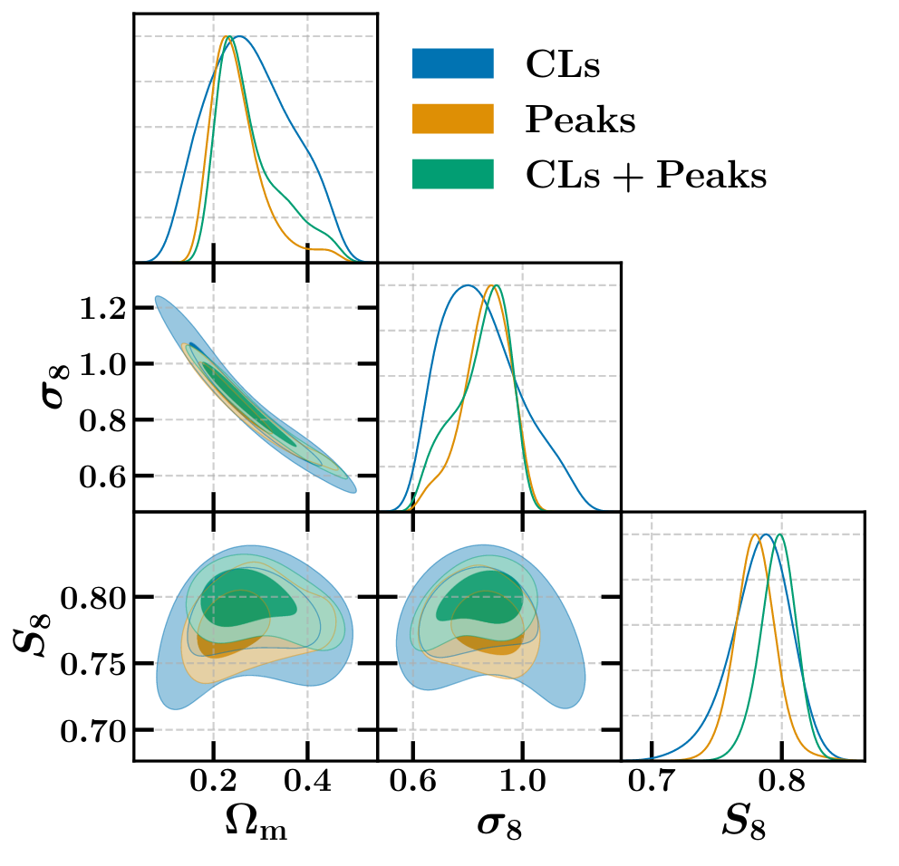
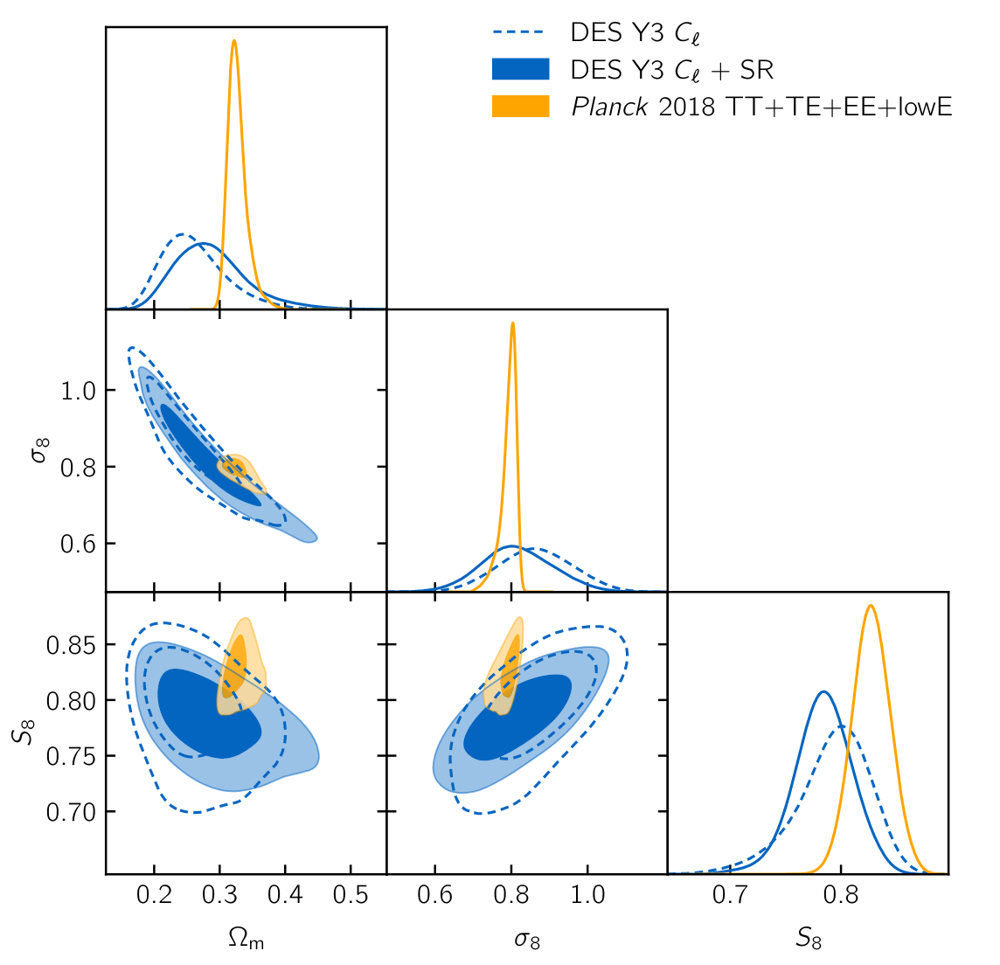
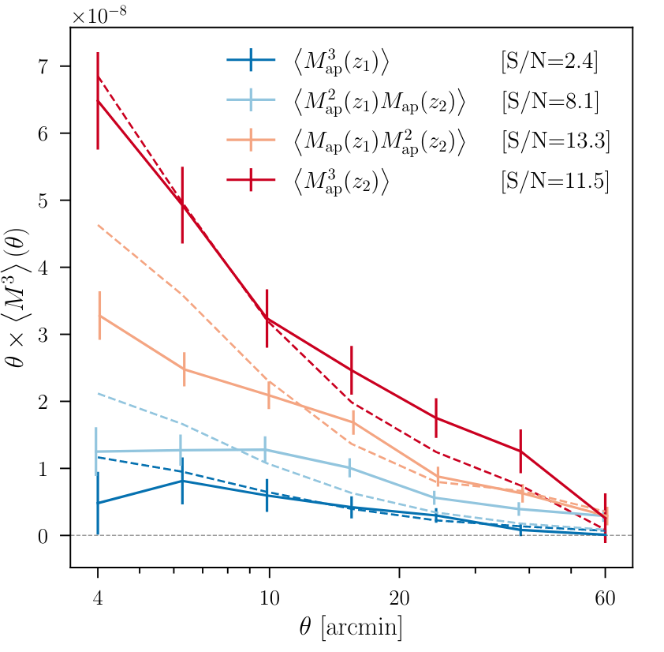
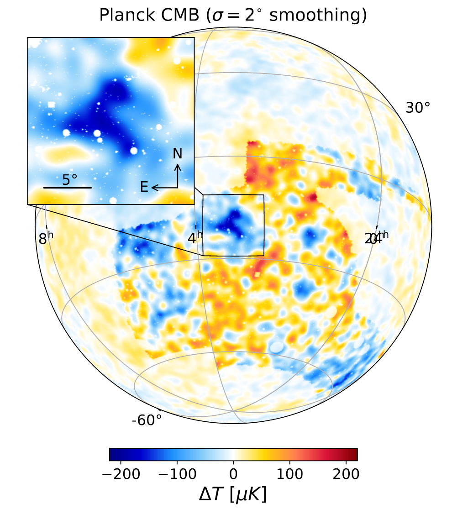
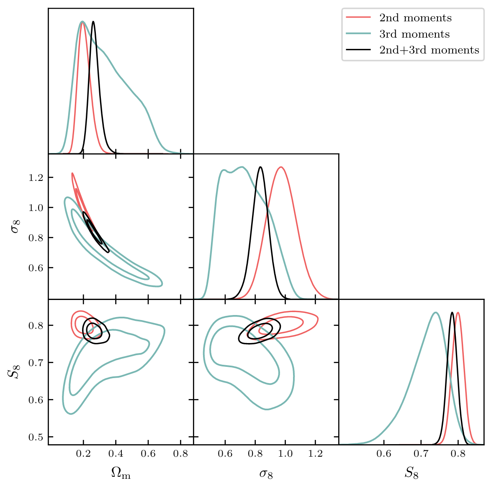
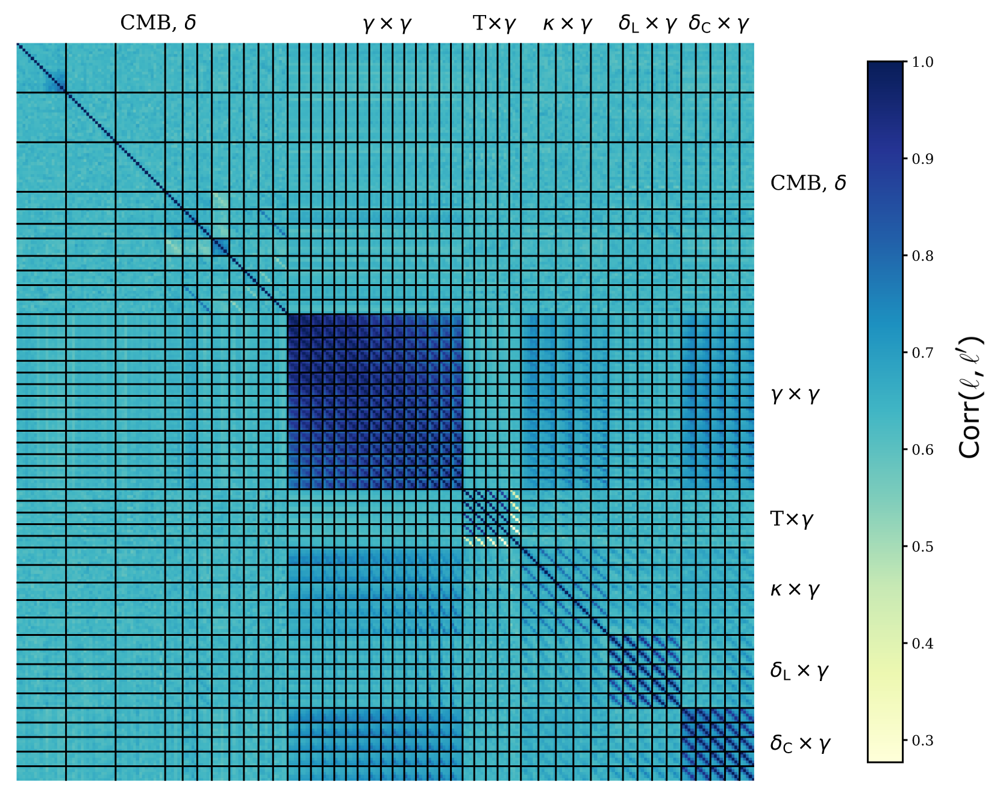
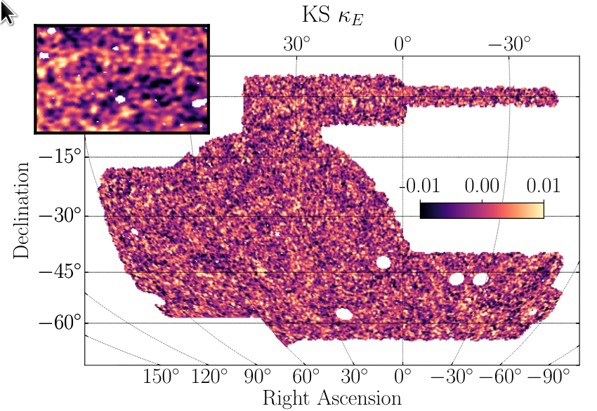

Research / Publications
In my PhD research I am working on increasing the amount of cosmological
information that can be extracted from cosmic shear data. I study the use of higher-order
mass map statistics that are sensitive to the non-Gaussian information of mass maps that is complementary
to the Gaussian information commonly extracted using two-point summary statistics.
Using a forward-modelling approach I avoid the need to predict higher-order statistics from theory
for different cosmologies, which often requires to rely on approximations.
 Dark Energy Survey Year 3 results: Cosmology with peaks using an emulator approach
Dark Energy Survey Year 3 results: Cosmology with peaks using an emulator approach
Monthly Notices of the Royal Astronomical Society 511.2 (2022)
arXiv Link
Authors:
D. Zürcher, J. Fluri, R. Sgier, et al.

Abstract:
We constrain the matter density Ωm and the amplitude of density fluctuations σ8>
within the ΛCDM cosmological model with shear peak statistics and angular
convergence power spectra using mass maps constructed from the first three
years of data of the Dark Energy Survey (DES Y3). We use tomographic shear
peak statistics, including cross-peaks: peak counts calculated on maps
created by taking a harmonic space product of the convergence of two tomographic
redshift bins. Our analysis follows a forward-modelling scheme to create a
likelihood of these statistics using N-body simulations, using a Gaussian
process emulator. We include the following lensing systematics: multiplicative
shear bias, photometric redshift uncertainty, and galaxy intrinsic alignment.
Stringent scale cuts are applied to avoid biases from unmodelled baryonic physics.
We find that the additional non-Gaussian information leads to a tightening of
the constraints on the structure growth parameter yielding
S8 = 0.797+0.015-0.013 (68% confidence limits), with a
precision of 1.8%, an improvement of ~38% compared to the angular power
spectra only case. The results obtained with the angular power spectra and
peak counts are found to be in agreement with each other and no significant
difference in S8 is recorded. We find a mild tension of 1.5σ between our study
and the results from Planck 2018, with our analysis yielding a lower S8
Furthermore, we observe that the combination of angular power spectra and
tomographic peak counts breaks the degeneracy between galaxy intrinsic alignment
AIA and S8, improving cosmological constraints. We run a suite of tests concluding
that our results are robust and consistent with the results from other studies
using DES Y3 data.
Dark Energy Survey Year 3 results: cosmological constraints from the analysis of cosmic shear in harmonic space
arXiv preprint arXiv:2203.07128 (2022)
arXiv Link
Authors:
L. Doux, B. Jain, D. Zürcher, et al.

Abstract:
We present cosmological constraints from the analysis of angular
power spectra of cosmic shear maps based on data from the first three
years of observations by the Dark Energy Survey (DES Y3). Our measurements
are based on the pseudo-Cl method and offer a view complementary to that
of the two-point correlation functions in real space, as the two estimators
are known to compress and select Gaussian information in different ways,
due to scale cuts. They may also be differently affected by systematic effects
and theoretical uncertainties, such as baryons and intrinsic alignments (IA),
making this analysis an important cross-check. In the context of ΛCDM, and
using the same fiducial model as in the DES Y3 real space analysis, we find
S8=0.793+0.038-0.025, which further improves to
S8=0.784±0.026 when including shear ratios. This constraint is within
expected statistical fluctuations from the real space analysis, and in
agreement with DES~Y3 analyses of non-Gaussian statistics, but favors a
slightly higher value of S8, which reduces the tension with the Planck
cosmic microwave background 2018 results from 2.3σ in the real space
analysis to 1.5σ in this work. We explore less conservative IA models
than the one adopted in our fiducial analysis, finding no clear preference
for a more complex model. We also include small scales, using an
increased Fourier mode cut-off up to kmax=5 h Mpc-1, which allows to
constrain baryonic feedback while leaving cosmological constraints
essentially unchanged. Finally, we present an approximate reconstruction
of the linear matter power spectrum at present time, which is found to
be about 20% lower than predicted by Planck 2018, as reflected by
the 1.5σ lower S8 value.
Dark Energy Survey Year 3 Results: Three-Point Shear Correlations and Mass Aperture Moments
arXiv preprint arXiv:2201.05227 (2022)
arXiv Link
Authors:
L. F. Secco, D. Zürcher, et al.

Abstract:
We present high signal-to-noise measurements of three-point shear correlations and
the third moment of the mass aperture statistic using the first 3 years of data
from the Dark Energy Survey. We additionally obtain the first measurements of the
configuration and scale dependence of the four three-point shear correlations which
carry cosmological information. With the third-order mass aperture statistic, we
present tomographic measurements over angular scales of 4 to 60 arcminutes with a
combined statistical significance of 15.0σ. Using the tomographic information
and measuring also the second-order mass aperture, we additionally obtain a
skewness parameter and its redshift evolution. We find that the amplitudes
and scale-dependence of these shear 3pt functions are in qualitative agreement
with measurements in a mock galaxy catalog based on N-body simulations,
indicating promise for including them in future cosmological analyses.
We validate our measurements by showing that B-modes, parity-violating
contributions and PSF modeling uncertainties are negligible, and determine
that the measured signals are likely to be of astrophysical and gravitational origin.
The DES view of the Eridanus supervoid and the CMB Cold Spot
Monthly Notices of the Royal Astronomical Society 510.1 (2022): 216-229.
arXiv Link
Authors:
A. Kovács, N. Jeffrey, M. Gatti, C. Chang, L. Whiteway, N. Hamaus, O. Lahav, G. Pollina, D. Bacon, T. Kacprzak, B. Mawdsley, S. Nadathur, D. Zürcher, et al.

Abstract:
The Cold Spot is a puzzling large-scale feature in the Cosmic Microwave Background
temperature maps and its origin has been subject to active debate.
As an important foreground structure at low redshift, the Eridanus supervoid
was recently detected, but it was subsequently determined that, assuming the standard
ΛCDM model, only about 10-20% of the observed temperature depression can be accounted for
via its Integrated Sachs-Wolfe imprint. However, R≳100 h-1Mpc supervoids elsewhere in the
sky have shown ISW imprints AISW≈5.2±1.6 times stronger than expected from ΛCDM (AISW=1),
which warrants further inspection. Using the Year-3 redMaGiC catalogue of luminous
red galaxies from the Dark Energy Survey, here we confirm the detection of the Eridanus
supervoid as a significant under-density in the Cold Spot's direction at z<0.2.
We also show, with S/N≳5 significance, that the Eridanus supervoid appears as the most
prominent large-scale under-density in the dark matter mass maps that we reconstructed
from DES Year-3 gravitational lensing data. While we report no significant anomalies,
an interesting aspect is that the amplitude of the lensing signal from the Eridanus
supervoid at the Cold Spot centre is about 30% lower than expected from similar peaks
found in N-body simulations based on the standard ΛCDM model with parameters Ωm=0.279
and σ8=0.82. Overall, our results confirm the causal relation between these
individually rare structures in the cosmic web and in the CMB, motivating more
detailed future surveys in the Cold Spot region.
Dark Energy Survey Year 3 results: cosmology with moments of weak lensing mass maps
arXiv preprint arXiv:2110.10141 (2021).
arXiv Link
Authors:
M. Gatti, B. Jain, C. Chang, M. Raveri, D. Zürcher, et al.

Abstract:
We present a cosmological analysis using the second and third moments of the weak lensing mass (convergence)
maps from the first three years of data (Y3) data of the Dark Energy Survey (DES). The survey spans an effective
area of 4139 square degrees and uses the images of over 100 million galaxies to reconstruct the convergence field.
The second moment of the convergence as a function of smoothing scale contains information similar to standard
shear 2-point statistics. The third moment, or the skewness, contains additional non-Gaussian information.
The data is analysed in the context of the ΛCDM model, varying 5 cosmological parameters and 19 nuisance parameters
modelling astrophysical and measurement systematics. Our modelling of the observables is completely analytical,
and has been tested with simulations in our previous methodology study. We obtain a 1.7% measurement of the
amplitude of fluctuations parameter S8=0.784±0.013. The measurements are shown to be internally
consistent across redshift bins, angular scales, and between second and third moments. In particular, the measured
third moment is consistent with the expectation of gravitational clustering under the ΛCDM model.
The addition of the third moment improves the constraints on S8 and Ωm by ∼15% and ∼25% compared to an
analysis that only uses second moments. We compare our results with Planck constraints from the Cosmic
Microwave Background (CMB), finding a 2.2 - 2.8σ tension in the full parameter space, depending on
the combination of moments considered. The third moment independently is in 2.8σ tension with Planck,
and thus provides a cross-check on analyses of 2-point correlations.
Combined 13x2-point analysis of the Cosmic Microwave Background and Large-Scale Structure: implications for the S8-tension and neutrino mass constraints
arXiv preprint arXiv:2110.03815 (2021).
arXiv Link
Authors:
R. Sgier, C. Lorenz, A. Refregier, J. Fluri, D. Zürcher, F. Tarsitano

Abstract:
We present cosmological constraints for the flat ΛCDM model, including the sum of neutrino masses,
by performing a multi-probe analysis of a total of 13 tomographic auto- and cross-angular power spectra.
This is achieved by combining, at map level, the latest primary CMB and CMB-lensing measurements from the
Planck 2018 data release, as well as spectroscopic galaxy samples from BOSS DR12, and the latest
Kilo-Degree Survey (KiDS-1000) tomographic weak lensing shear data release. Our analysis includes
auto- and cross-correlations as well as calibration parameters for all cosmological probes, thus
providing a self-calibration of the combined data sets. We find a good fit (reduced χ2=1.7) for the
combined probes with calibration parameters only moderately different from their nominal value,
thus giving a possible interpretation of the tension between the early- and late-Universe probes.
The resulting value for the structure growth parameter is S8=0.754±0.016 (68% CL). We also obtain
a ∼2.3σ constrain1t on the neutrino mass sum of ∑mν=0.51+0.21−0.24 eV (68% CL), which is compatible
with current particle physics limits. We perform several tests by fixing the neutrino mass sum to
a low value, considering narrower priors on the multiplicative bias parameters for cosmic shear,
and by fixing all calibration parameters to their expected values. These tests result in worse
fits compared to our fiducial run, especially for the case when all calibration parameters are fixed.
This latter test also yields a lower upper limit of the neutrino mass sum. We discuss how the
interplay between the cosmological and calibration parameters impact the S8-tension and the
constraints on the neutrino mass sum.
Cosmological forecast for non-Gaussian statistics in large-scale weak lensing surveys
Journal of Cosmology and Astroparticle Physics 2021.01 (2021): 028.
arXiv Link
Authors:
D. Zürcher, J. Fluri, R. Sgier, T. Kacprzak, A. Refregier

Abstract:
Cosmic shear data contains a large amount of cosmological information
encapsulated in the non-Gaussian features of the weak lensing mass maps.
Weak lensing studiesmostly rely on two-point statistics to constrain
cosmology from cosmic shear data, that do not capture all of this
information. Additional non-Gaussian information can be extracted
using non-Gaussian statistics. We compare the constraining power
in the Ωm–σ8 plane of three map-based non-Gaussian statistics with the
angular power spectrum, namely; peakcounts, minimum counts and
Minkowski functionals. We further analyze the impact of to-mography
and systematic effects originating from galaxy intrinsic alignments,
multiplicativeshear bias and photometric redshift systematics.
We forecast the performance of the statisticsfor a stage-3-like weak
lensing survey, spanning an area of 5000 deg2 and restrict ourselves
to scales ≥ 10 arcmin to avoid baryonic effects.
The study follows a forward modelling scheme to predict the statistics
at different cosmologies based on N-Body simulations. We find, that in
our setup, the considered non-Gaussian statistics provide tighter
constraints thanthe angular power spectrum. The peak counts show the
greatest potential, increasing thefigure-of-Merit (FoM) in the
Ωm–σ8 plane by a factor of about 6, while the minimum counts and the
Minkowski functionals yield an increase by a factor of about 3 and 2,
respectively. A combined analysis using all non-Gaussian statistics
in addition to the power spectrum increases the FoM by a factor of 9
and reduces the error on S8 by ≈30%. We find that the importance of
tomography is diminished when combining non-Gaussian statistics with
the angular power spectrum. The non-Gaussian statistics indeed profit
less from tomography and the minimum counts and Minkowski functionals
add some robustness against galaxy intrinsic alignment in a
non-tomographic setting. We further find that a combination of the
angular power spectrum and the non-Gaussian statistics allows us to
apply conservative scale cuts in the analysis, thus helping to
minimize the impact of baryonic and relativistic effects, while
conserving the cosmological constraining power. We make the code that
was used to conduct this analysis publicly available to simplify
performing such analyses in the future.
The Splashback Radius of Planck SZ Clusters
The Astrophysical Journal 874.2 (2019): 184.
arXiv Link
Authors:
D. Zürcher and S. More

Abstract:
We present evidence for the existence of the splashback radius in galaxy
clusters selected using the Sunyaev–Zeldovich effect, a sample unaffected
by systematics related to cluster finding in the optical wavelength range.
We show that the deprojected cross-correlation of galaxy clusters found
in the Planck survey with galaxies detected photometrically in the Pan-STARRS
survey shows a sharp steepening feature (a logarithmic slope steeper than−3),
which we associate with the splashback radius. We infer the 3D splashback radius
for the SZ cluster sample to be rsp =
1.85±0.28 h-1 Mpc, where the cluster
sample has an average halo mass of M500c = 3.0 × 1014
h-1 Msol at an average
redshift of z = 0.18. The inferred value of the splashback radius appears
marginally consistent with the expected location for dark matter halos in
the standard cold dark matter paradigm. However, given the limited
precision of our measurements, we cannot conclusively confirm or rule out the
smaller splashback radius measured so far in the literature for optically
selected galaxy clusters. We show that the splashback radius does not depend
on the galaxy magnitude for galaxies fainter than Mi - 5 log(h) = -19.44
and is present at a consistent location ingalaxy populations divided by color.
The presence of the splashback radius in the star-forming galaxy population
could potentially be used to put lower limits on the quenching time scales for galaxies.
We can marginally rule outthe contamination of the star-forming galaxy sample
by quenched galaxies, but the results would need further verification with deeper data sets.
Dark Energy Survey Year 3 results: Curved-sky weak lensing mass map reconstruction
Monthly Notices of the Royal Astronomical Society 505.3 (2021): 4626-4645.
arXiv Link
Authors:
N. Jeffrey, M. Gatti, C. Chang, L. Whiteway, U. Demirbozan, A. Kovacs, G. Pollina, D. Bacon, N. Hamaus,
T. Kacprzak, O. Lahav, F. Lanusse, B. Mawdsley, S. Nadathur, J. L. Starck, P. Vielzeuf,
D. Zürcher, et al.

Abstract:
We present reconstructed convergence maps, mass maps, from the Dark Energy Survey (DES)
third year (Y3) weak gravitational lensing data set. The mass maps are weighted projections
of the density field (primarily dark matter) in the foreground of the observed galaxies.
We use four reconstruction methods, each is a maximum a posteriori estimate with a different
model for the prior probability of the map: Kaiser–Squires, null B-mode prior, Gaussian prior,
and a sparsity prior. All methods are implemented on the celestial sphere to accommodate
the large sky coverage of the DES Y3 data. We compare the methods using realistic ΛCDM
simulations with mock data that are closely matched to the DES Y3 data. We quantify the
performance of the methods at the map level and then apply the reconstruction methods
to the DES Y3 data, performing tests for systematic error effects. The maps are
compared with optical foreground cosmic-web structures and are used to evaluate the
lensing signal from cosmic-void profiles. The recovered dark matter map covers
the largest sky fraction of any galaxy weak lensing map to date.
Spectro-imaging forward model of red and blue galaxies
The Astrophysical Journal 874.2 (2019): 184.
arXiv Link
Authors:
M. Fagioli, L. Tortorelli, J. Herbel,
D. Zürcher, A. Refregier, A. Amara

Abstract:
For the next generation of spectroscopic galaxy surveys, it is important
to forecast their performances and to accurately interpret their large data sets.
For this purpose, it is necessary to consistently simulate different populations
of galaxies, in particular Emission Line Galaxies (ELGs), less used in the past for
cosmological purposes. In this work, we further the forward modeling approach
presented in Fagioli et al. 2018, by extending thespectra simulator Uspec to model
galaxies of different kinds with improved parameters from Tortorelli et al. 2020.
Furthermore, we improve the modeling of the selection function byusing the image simulator
Ufig. We apply this to the Sloan Digital Sky Survey (SDSS), and simulate ∼157,000 multi-band images.
We pre-process and analyse them to apply cuts for target selection, and finally simulate
SDSS/BOSS DR14 galaxy spectra. We compute photometric, astrometric and spectroscopic properties
for red and blue, real and simulated galaxies, finding very good agreement.
We compare the statistical properties of the samples by decomposing them with Principal Component Analysis (PCA).
We find very good agree-ment for red galaxies and a good, but less pronounced one, for blue galaxies,
as expected given the known difficulty of simulating those. Finally, we derive stellar
population properties, mass-to-light ratios, ages and metallicities,
for all samples, finding again very good agreement. This shows how this method can be used
not only to forecast cosmology surveys, but it is also able to provide insights into
studies of galaxy formation and evolution.
↑
Back to top